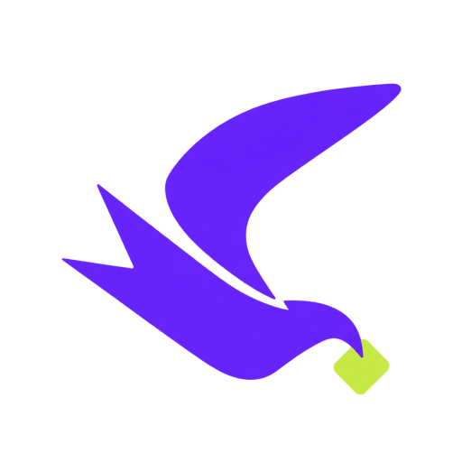

الجودة اللي تناسبك
شوف الجودات المتاحة للفيديو، واختار اللي يناسب شاشتك ومساحة جهازك.

CatchItاختار الجودة ولغة الصوت والترجمة، أو نزّل الصوت لوحده. CatchIt يجهّزلك الملف على جهازك بخطوات سهلة وواضحة.
بندور على آخر إصدار…
من أول اللينك لحد الملف النهائي، كل اختيار قدامك قبل ما تبدأ.
شوف الجودات المتاحة للفيديو، واختار اللي يناسب شاشتك ومساحة جهازك.
اختار لغة الصوت المتاحة، وعلى Android تقدر تعزل الموسيقى وتحتفظ بالكلام والمؤثرات.
لو فيه ترجمة متاحة، تقدر تحفظها في ملف منفصل جنب الفيديو.
نزّله MP3 أو M4A أو FLAC من نفس شاشة الاختيارات.
من غير حساب ولا باسورد. نزّل فيديو واحد في كل مرة مجانًا، ولو محتاج تنزّل أكتر فعّل Pro بكود مخصوص لجهازك.
نزّل فيديو واحد في كل مرة، واختار الجودة والصوت والترجمة. عزل الموسيقى على Android متاح مجانًا.
من غير حسابنزّل أكتر من فيديو، وخلّي التحميل يبدأ تلقائيًا. عزل الموسيقى على Android بنفس طريقة Free.
تفعيل سنة بكودنسخة Linux x86_64 معاها أدوات التحميل والدمج اللي محتاجها. بعد فك الضغط، سيب ملفات التطبيق كلها في نفس المجلد.
universal-downloader.universal_downloader من جوّه المجلد.محتاج Linux x86_64 وواجهة GTK 3. التطبيق اتجرّب على Ubuntu 24.04.
نسخة محمولة لـWindows 10/11 x64. نزّل ملف ZIP، فك الضغط، وشغّل universal_downloader.exe من جوّه المجلد بكل ملفاته.
بندور على إصدار Windows…
نزّل ملف APK واحد لأجهزة Android 10 أو أحدث. عزل الموسيقى متاح في Free وPro؛ أول استخدام بيحمّل موديل حجمه حوالي 31 MB.
بندور على إصدار Android…